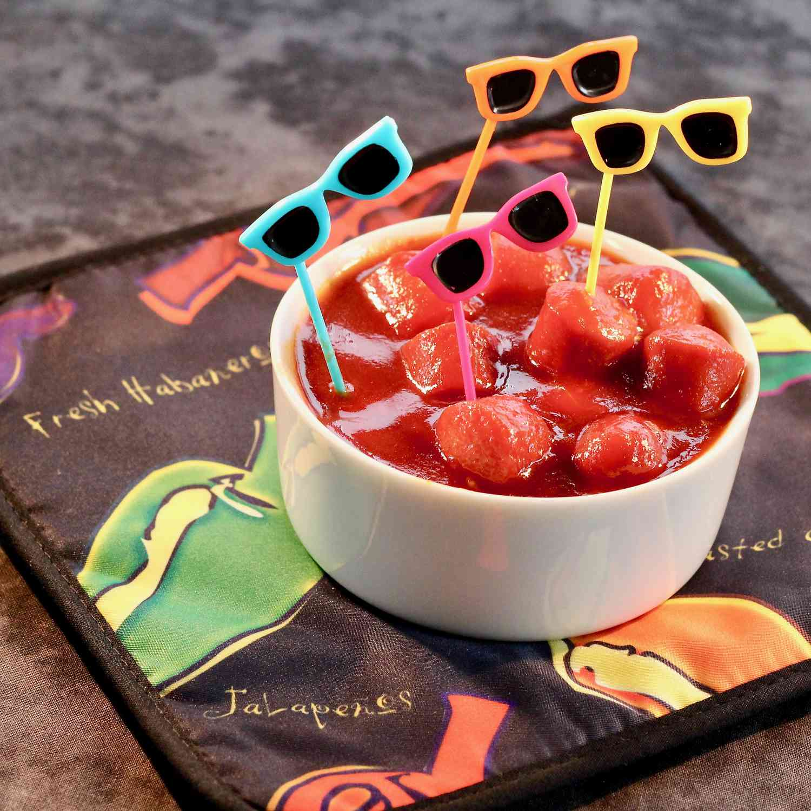

Saucy Sriracha Franks

A little heat, a little sweet, and a little Asian. Serve with toothpicks, and you have a one-bite appetizer that is so very simple to make.
Ingredients
- 1 cup ketchup
- ¼ cup soy sauce
- ¼ cup rice vinegar
- 3 tablespoons sriracha sauce
- 1 tablespoon brown sugar
- 1 teaspoon sesame oil
- 1 teaspoon grated ginger root
- 1 clove garlic, crushed
- 1 (12 ounce) package all-beef franks, cut into 1-inch slices
- 1 box toothpicks, or as needed
Steps
- Mix ketchup, soy sauce, vinegar, sriracha, brown sugar, sesame oil, ginger, and garlic in a saucepan and bring to a simmer over low heat.
Add franks and heat until warm, about 5 minutes. Serve with toothpicks.
Return to Index